Photo & video credits
The photographs and video on this website are real images of Sri Lanka shared by their authors on Wikimedia Commons under free licences. They have been resized and compressed for the web. Thank you to every photographer below.
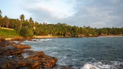
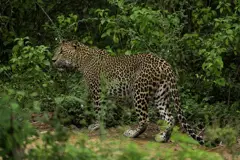
Sri-lankan-leopard-yala-casey-klebba.jpgby Casey Klebba · CC BY-SA 4.0 · Source · modified (resized)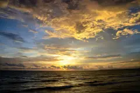
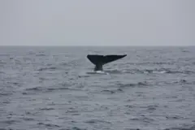
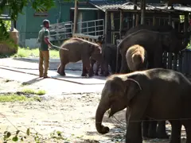
Udawalawe Elephant Transit Home 2017-10-27 (15).jpgby Z thomas · CC BY-SA 4.0 · Source · modified (resized)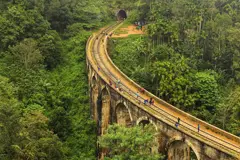
Nine Arches Bridge in Ella.jpgby Knthabrew · CC BY-SA 4.0 · Source · modified (resized)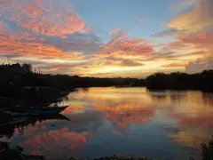
Sunset over Lagoon - Near Marakolliya Beach - Tangalla - Sri Lanka - 01 (14081544205).jpgby Adam Jones from Kelowna, BC, Canada · CC BY-SA 2.0 · Source · modified (resized)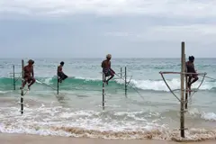
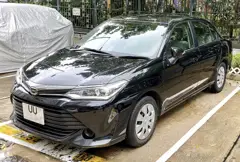
2016 Toyota Corolla Axio.jpgby User3204 · CC BY-SA 4.0 · Source · modified (resized)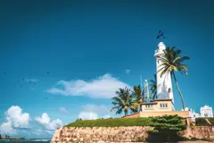
Lighthouse Galle, Sri Lanka.jpgby Samal Nadeeshan · CC BY-SA 4.0 · Source · modified (resized)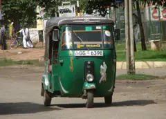
Tuk-Tuk Sri Lanka.jpgby Bernard Gagnon · CC BY-SA 3.0 · Source · modified (resized)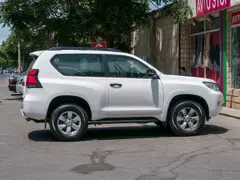
Toyota Land Cruiser Prado, Baku (P1090223).jpgby Matti Blume · CC BY-SA 4.0 · Source · modified (resized)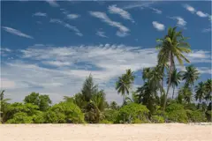
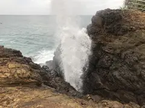
Hummanaya.jpgby Thilanka Kasunjith · CC BY-SA 4.0 · Source · modified (resized)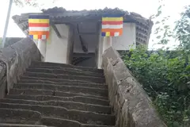
Mulkirigala Rock Temple - A.jpgby Dan arndt · CC BY-SA 4.0 · Source · modified (resized)
The videos on the home page (video/reel.mp4, video/hero.mp4, video/hero-mobile.mp4) are slow pan-and-zoom sequences made from the photos above and share their licences.
Vehicle photos show the type of vehicle used; the exact car or van may differ.